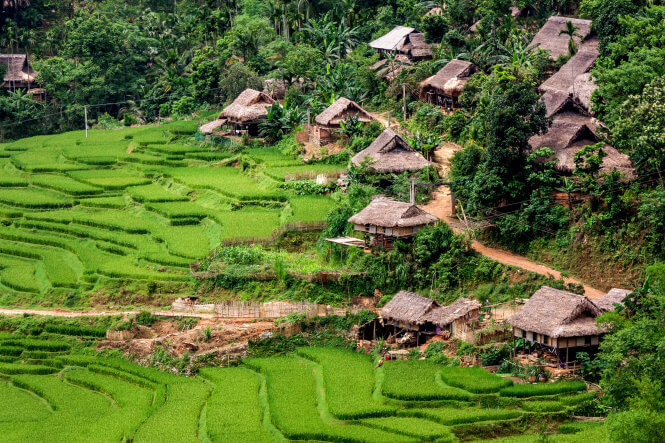
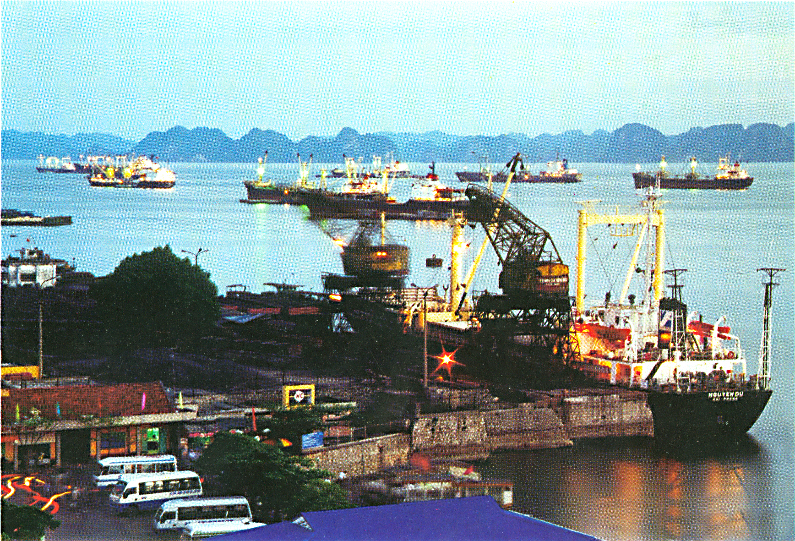

| Muong village | Mai Chau | Traditional dancing show |
|---|---|---|
|  | ||
| At 8.00am, meet our Travel’s tour guide and driver for a depart to Mai Chau where Muong people live.On the way, we will visit a Muong village at Cau Trong. | Continue to Thung Khe pass where offer a splendid panorama views of the valley before arriving in Mai Chau town. Mai Chau is a beautiful valley, located 150km away from Hanoi. It is great place with harmony landscapes, green mountain ranges, rice terraces, villages, White Thai ethnic people and their house on stilts. | Back to the village for dinner and enjoy a homestay at the village (stay at the house on stilts, basic equipment but quite comfortable for an authentic experience, included: clean mattress, pillow, mosquito net, blankets, outside WC) you could attend a traditional dancing show while tasting of local alcohol ( On request). Overnight homestay in Mai Chau. |
| Mai Hich | Chau Thay Master Pagoda | Tay Phuong Pagoda (Western Pagoda) |
|---|---|---|
| After breakfast, driving 25km to Mai Hich, enjoy a bike ride (optional) or walk in the trails or sometimes concrete roads. You will be seduced by the gorgeous landscapes.Villages, rice fields, mountains, streams are in perfect harmony. Do not forget the great moments to communicate with the local people.They are so friendly and willing to welcome you to their house to enjoy a cup of tea. Lunch will be served in a local family. | In the afternoon, we will drive back to Hanoi. On the way, visit Chau Thay Master Pagoda.This is the place where the famous monk name Tu Dao Hanh spent his religious life while created the Buddhist named Tantrism (phật giáo Mật Tông) and the art of water puppet. | Then transfer to Tay Phuong Pagoda (Western Pagoda) which located in a hill accessible by 230 laterite steps.This pagoda is well known by all Vietnamese for its magnificent statues and curl roofs which have entered into Vietnam poetry. Arrive in your hotel in the late afternoon. Overnight in Hanoi. |
| Vieng Fishing village | Hon Gai port | Hoian ancient town |
|---|---|---|
 |
 | |
| Breakfast on the boat Either visit the cave or embark a small bamboo sampan to visit Vung Vieng Fishing village, one of the spectacular floating villages in Halong. Encounter the locals and fishermen’s farm as well as a floating school. | Cruise back to Hon Gai port.On the way back, we will enjoy lunch on boat.Last look at the legendary bay where dragons descended. | Arrive the pier and take a transfer back to Hanoi and directly to airport for a short flight to Danang city. On arrival, pick up and transfer to Hoian ancient town.overnight in Hoian town. |
| Hoian Museum | silk factory | Cua Dai sea gate |
|---|---|---|
| After breakfast at your hotel and Enjoy a city tour in Hoian ancient town which listed in Heritage of Human. A real treasure needs to be discovered: Hoian Museum, Japanese bridge, China Town, Quan Thang ancient house, the local market and the old busy port. | Finally, visit silk factory (optional) of Thang Loi known as a good address in Hoian to have tailor made silk clothes. | The boat trip will take you along the river to Cua Dai sea gate.This is a good chance for you to appreciate the landscapes of peaceful village by the river bank and admire the fishermen’s activities on the river. Enjoy the sunset in the late afternoon from April to November. |
| Ben Tre | Hung Vuong pier | Nhon Thanh Village |
|---|---|---|
| In the morning, our guide and driver meet you at your hotel for transfer to Ben Tre – a beautiful region in the Mekong Delta River, famous for making coconut candy. | Arrive in Hung Vuong pier; get on a boat trip on the Ben Tre River to discover the daily local life. Stop to visit the brick kiln of Mr Tu Lo and discover the craft methods of making bricks. | Continue our boat trip on a canal to Nhon Thanh Village. This will be an opportunity to taste the fresh fruits.Transfer back to Saigon in the late afternoon. Overnight in Saigon. |
| Price List | |
|---|---|
| Numbers of people | Usual Price |
| Single | $1120 |
| Dual | $2200 |
| Triple | $3300 |
| Four and above | $1100 for each |